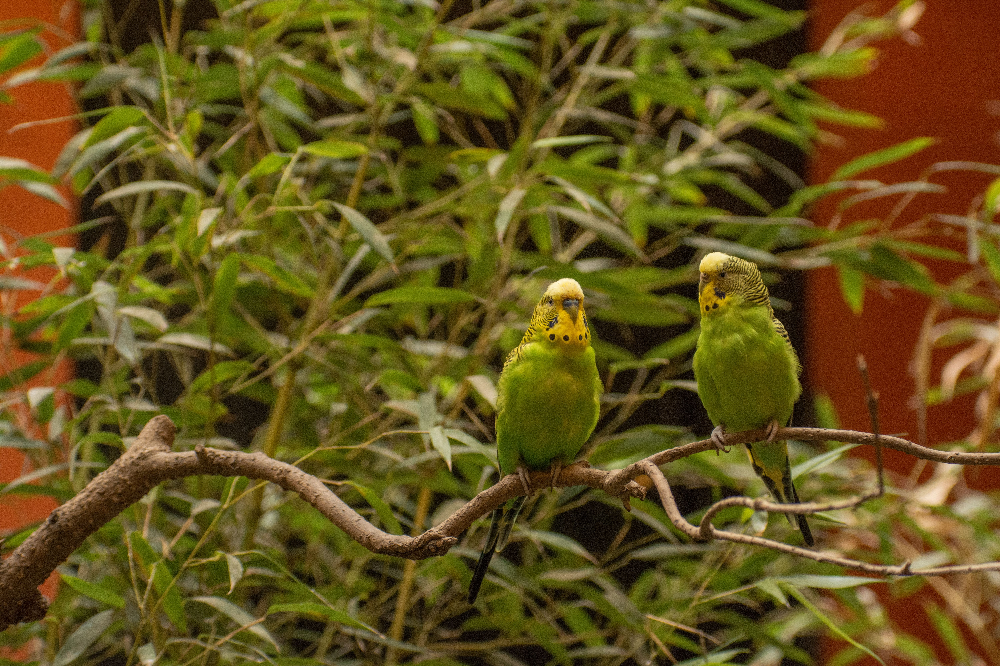

The Budgerigar is a small, slender Australian parrot famous worldwide as a popular cage bird but naturally occurring in large numbers across the Australian interior. Wild Budgerigars are predominantly green and yellow with black barring on the head, back and wings. They are highly social and can form enormous flocks, particularly after rainfall when temporary water sources and fresh grass seeds become available. They feed mainly on seeds on the ground and may travel long distances in search of food and water. Their ability to survive in Australia's dry interior makes them one of the country's most successful small parrots.
Budgerigar is best separated from Elegant Parrot by looking at the overall shape and the strongest plumage pattern rather than one small mark. Compared with Elegant Parrot, it has a different combination of colour, proportions and typical behaviour, which becomes clearer when the whole bird is visible. Bourke's Parrot can also resemble it in some settings, but differences in bill shape, tail length, wing pattern, posture or habitat can help narrow the identification. Calls and behaviour are useful supporting clues when plumage is difficult to see, especially for birds that spend much of their time in dense vegetation. Using several features together is more reliable than identifying the bird from a single characteristic.
BirdLife International — species factsheet and distribution, Cornell Lab of Ornithology — eBird and life-history information, IUCN Red List of Threatened Species